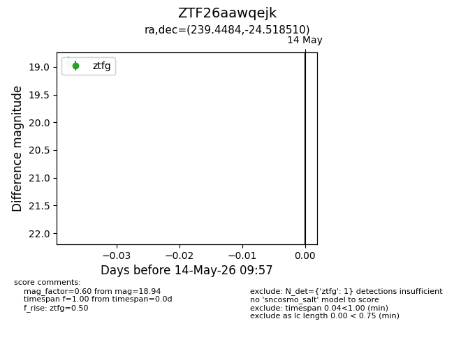
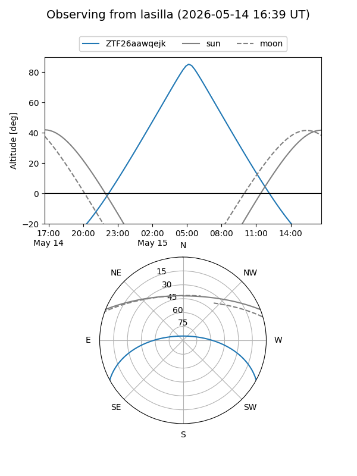
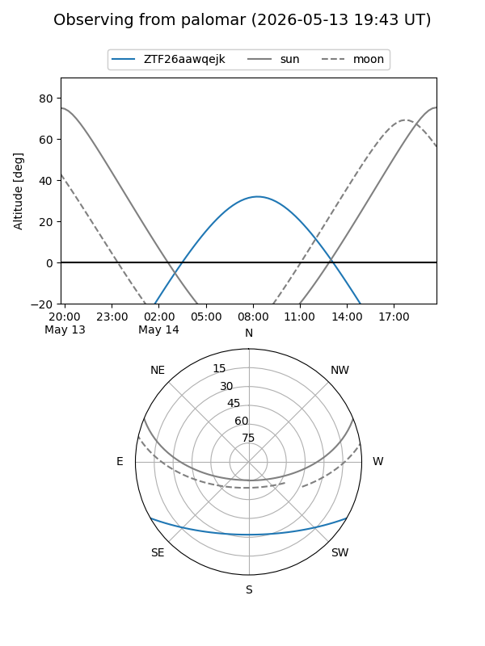

ZTF26aawqejk
Target ZTF26aawqejk at 2026-05-14 09:59
Aliases and brokers:
FINK: link
Lasair: link
ALeRCE: link
alt names
ZTF26aawqejk (ztf,fink_ztf)
Coordinates:
equatorial (ra, dec) = 239.4484,-24.51851
equatorial (HMS+DMS) = 15:57:47.60,-24:31:06.63
galactic (l, b) = (348.2148,+21.54586)
Flags:
Photometry:
last ztfg=18.94
1 ztfg detections
Lightcurve

Visibility


Additional plots